Digerati Experts · Experience program
Scrollcraft Review Gallery
Everything that exists, in one place, so no decision is made from memory: both Scrollcraft builds as they actually render today, every material asset the repository holds sorted by class, and the fingerprint registry that records where they collided.
01
Version B — the isolated homepage interpretation
Built from scratch on the vendored scrollcraft engine as a second reading of the whole site; three revisions (merged edition, generated plates + viewer-clean copy, quiet tier). Live for review at digeratiexperts.com/v2. Source: scrollcraft/builds/de-v2.
Grammar chaptered editorial. Hero title page on paper, no media above the fold. Peak the environment drawing itself under a 2.4-span pin. Signature the technology map as a persistent margin instrument: scattered → assembled → answering outcome choices → complete at the close. Curve calm → unease → awe → agency → confidence → depth → candor → warmth → resolve.
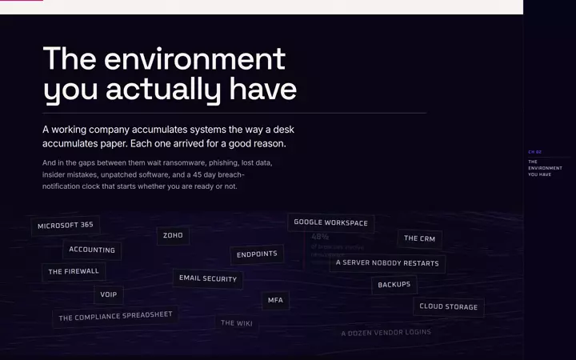
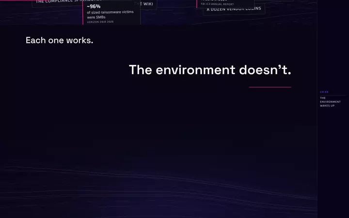
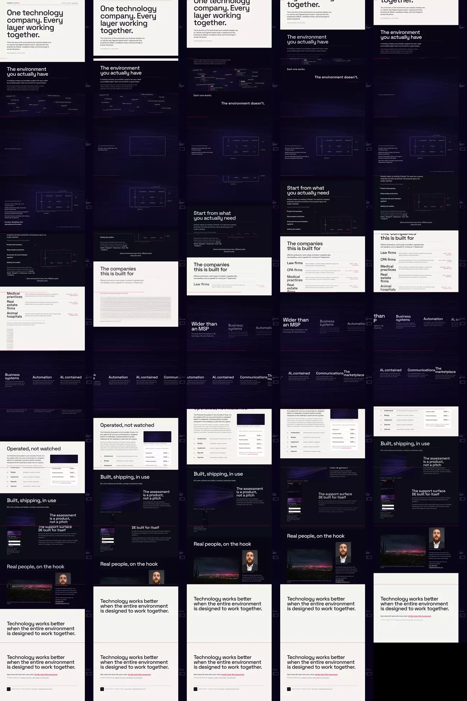
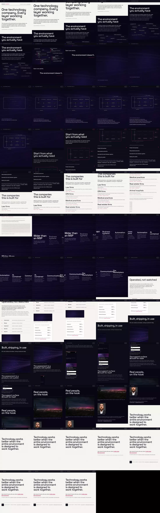
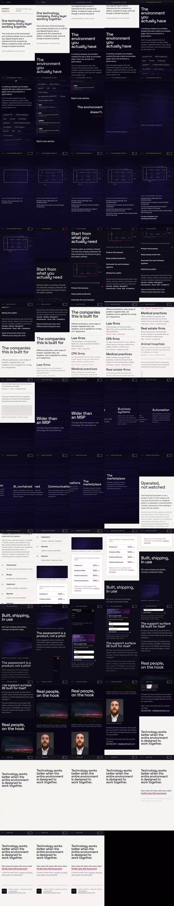
02
ProActive Ecosystem amplification — the parallel build
PR #166, built in a parallel session as an additive layer over the existing React page (every word and link retained; reduced-motion visitors and crawlers get the original). Live on production at /solutions/proactive-ecosystem. Source: client/src/scrollstory · brief at scrollcraft/builds/proactive-ecosystem-amplify/BRIEF.md.
*Shot today from a local production build. The harness logged two blocked third-party loads (Google Tag Manager, Google Fonts) — the sandbox's network policy, not the page.
Grammar chaptered editorial over the page's seven existing sections. Hero the existing text hero into a staggered pillar chapter. Peak EnvironmentAssembly — six domains scattered, assembling under a 2.2-span pin. Signature EnvironmentFolio — a fixed margin map lighting one domain per chapter, complete and clickable by the close. Curve recognition → unease → awe → trust → confidence → clarity → resolve. Tell-someone sentence "the pile of disconnected systems drew itself into one connected environment while I scrolled, and a little map in the margin kept the record."
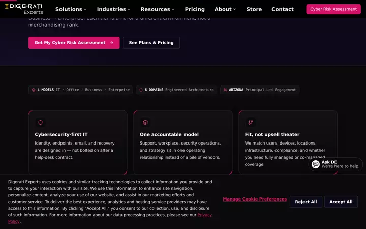
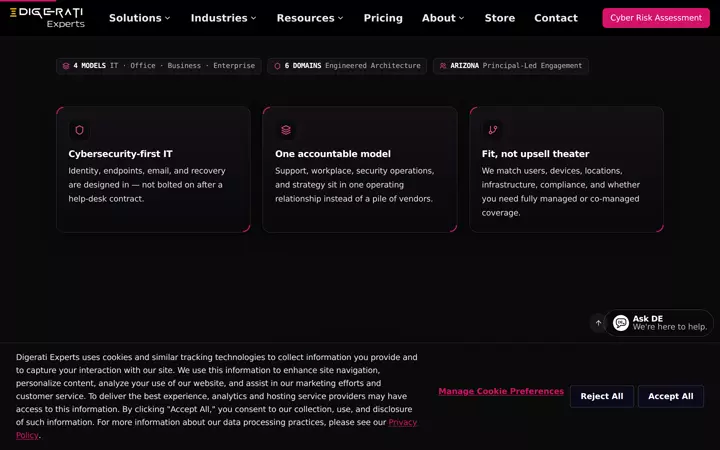
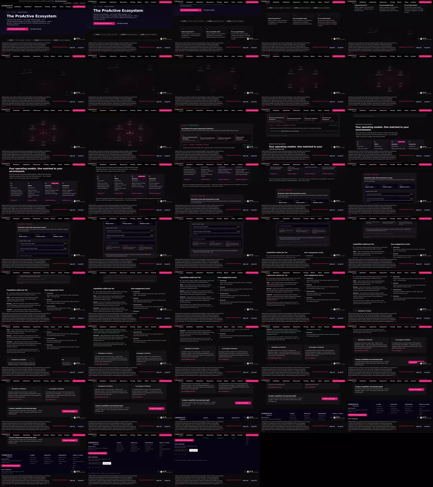
03
The registry, and the collision it recorded
The fingerprint gate asks a new build to differ from every existing row on four of six dimensions. The two builds were made in parallel, neither seeing the other's row. Shaded cells are where they converged.
| Dimension | de-v2 (Version B) | proactive-ecosystem-amplify (#166) |
|---|---|---|
| Grammar | Chaptered editorial | Chaptered editorial (amplification over an existing page) |
| Nav treatment | No bar; fixed machine-room rail: folio + live mini technology map | Site nav + fixed margin environment folio: chapter number, title, live map |
| Hero device | Title page: type on paper, kinetic lines, no media | Existing text hero, no media, into staggered pillars |
| Act-sequence shape | 10 chapters ≈ 14.1vh incl. pan 1.6 and two pins | 7 chapters, one pin (2.2), reveals/parallax/stagger/hold |
| Close pattern | Colophon plate on paper; CTA as running text; completed map holds | Compare panel lands and holds inside the existing CTA section |
| Signature move | Persistent margin map: scatters, snaps together at the peak, answers outcomes, complete at close | Accumulating margin map: one domain lit and linked per chapter, complete and clickable by the close |
What the registry now holds as taken: chaptered editorial grammar; the margin rail with a live figure; the type-only title-page hero; the pinned scatter-to-assembly diagram peak; the accumulating margin environment map; the colophon close with running-text CTA; the hold-on-existing-CTA close; the 9-act ≈ 14vh band. The recorded consequence: the next build must clear both rows on four of six, which rules out the folio-plus-live-map margin and the chaptered-editorial grammar together.
04
Every material asset, by class
Class labels follow the Experience Plan's five material classes. Paths are repository-relative. Where an asset's provenance or license is not recorded in the repo, that is stated rather than assumed.
Class A — real DE evidence

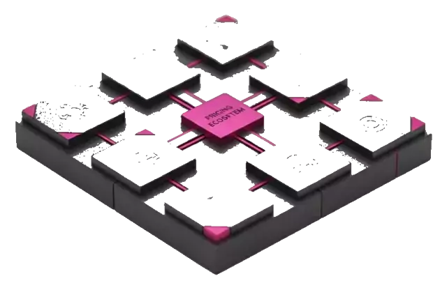
client/public/images/vendors/ (1Password, Bitdefender, Cloudflare, Huntress, Sophos, ThreatLocker, Zoho …). Real logos of real tools; the plan's truthfulness rule governs how any of them may be presented.Class B — real people and place

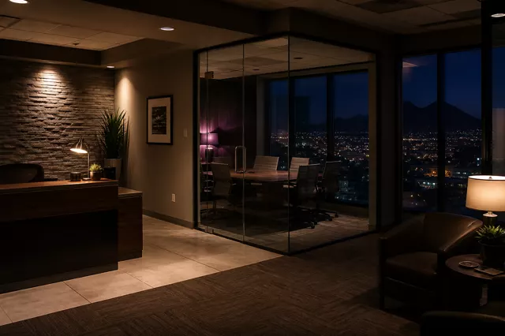
Class C — bespoke explanatory graphics
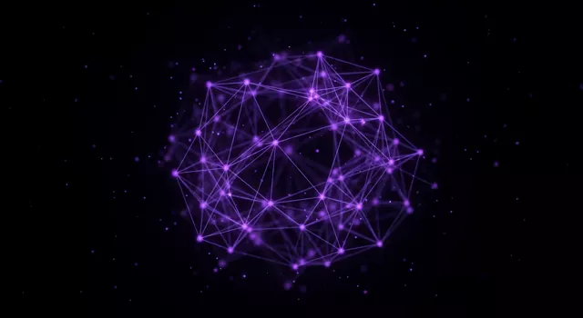
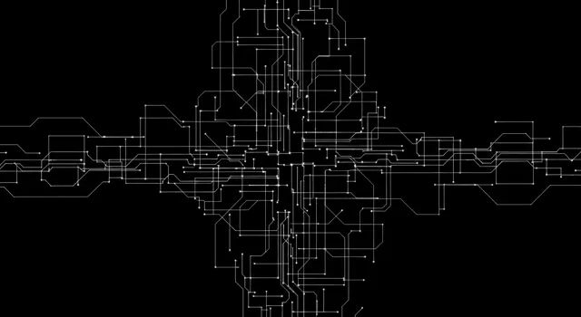
Class D — art-directed imagery
Graphite Illumination · the six plates (seed 7)
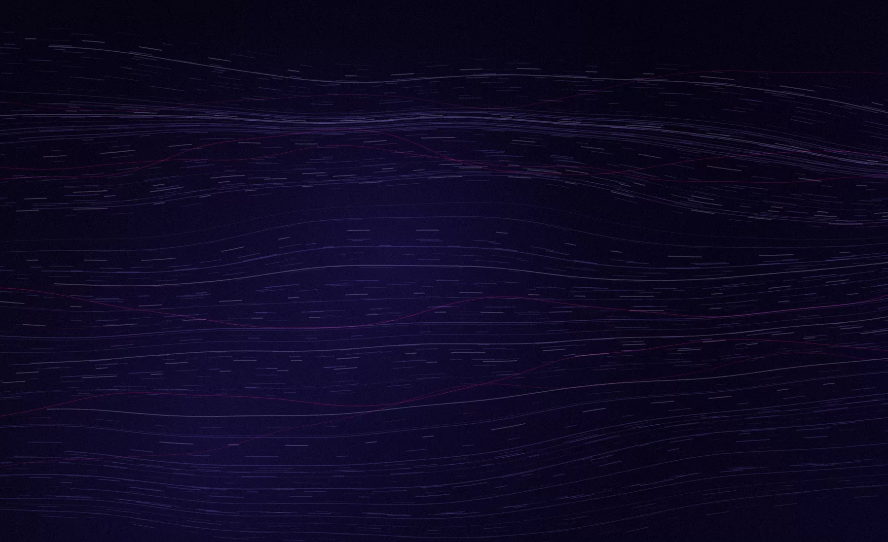

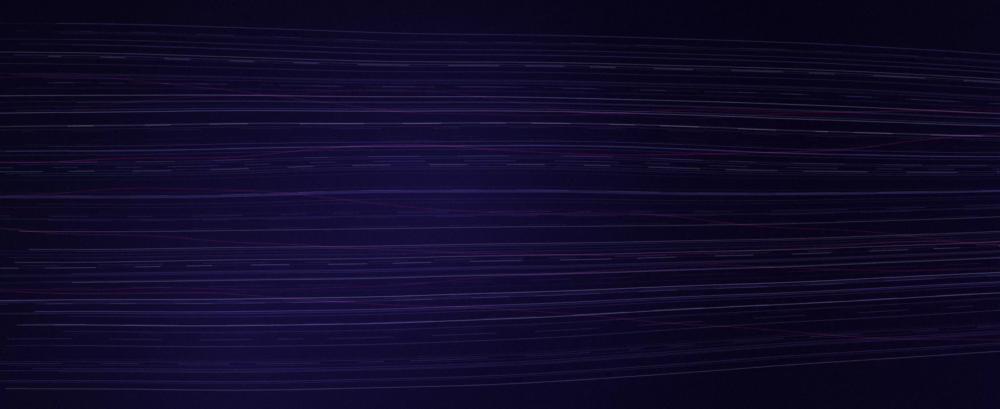
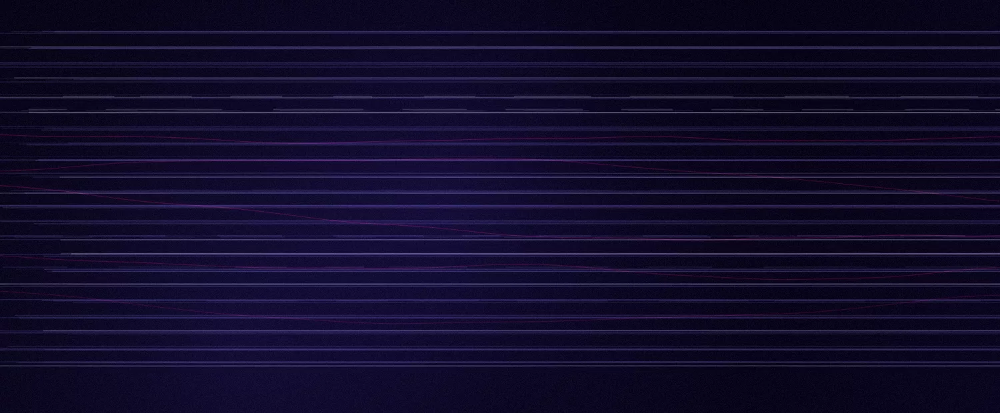


Deterministic from lab/plates/generator.html?plate=…&seed=7; the philosophy is in lab/plates/GRAPHITE-ILLUMINATION.md. The plan's verdict: keep as one instrument, demote to seasoning.
Approved licensed stills · Meshy batch-01 (refined, public derivatives)
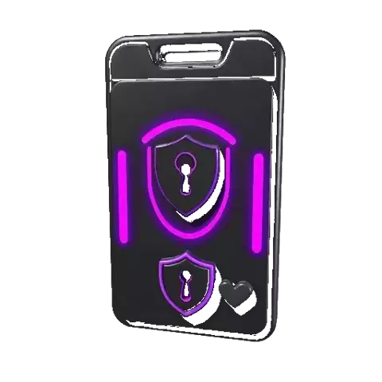
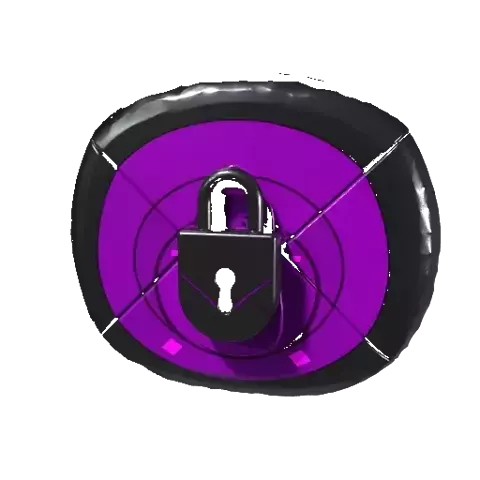
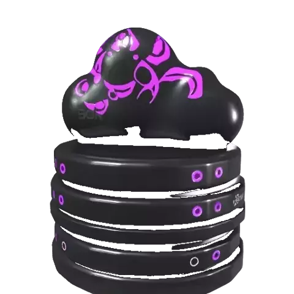
Engagement-path brand art
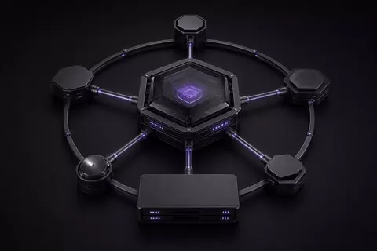
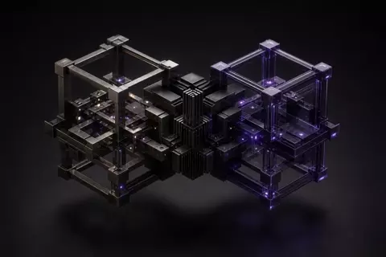
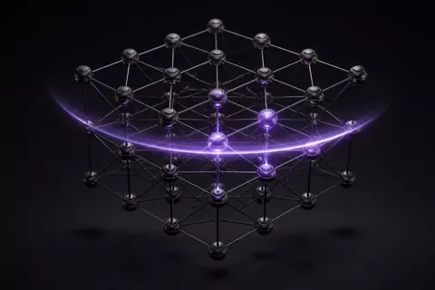
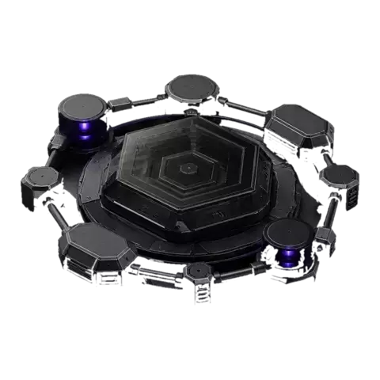
Generated imagery on file (Lucid Origin outputs, by filename)
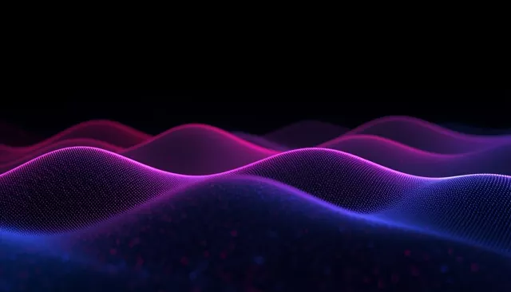
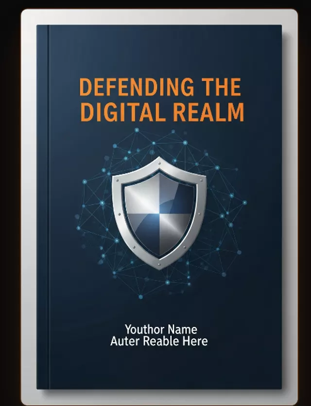
Brand backgrounds and design exports
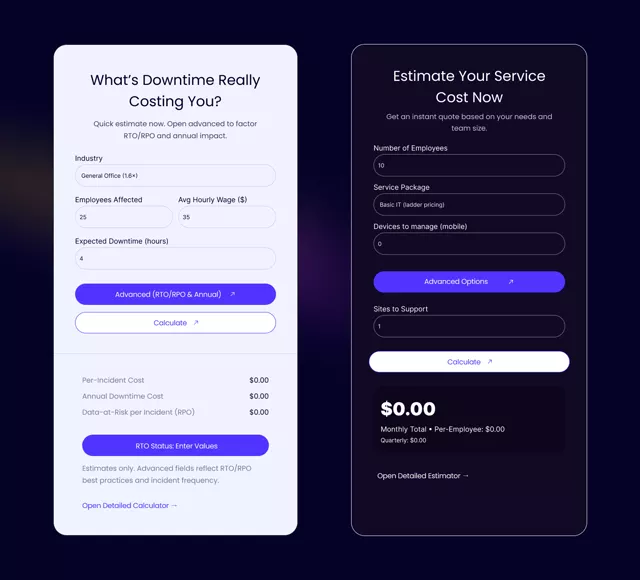
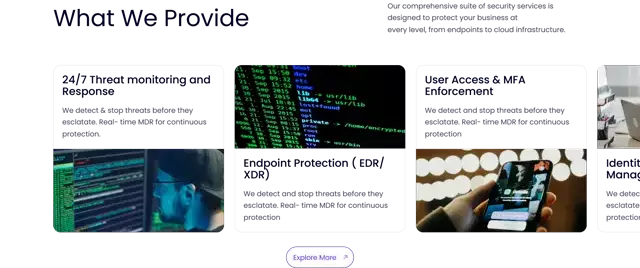
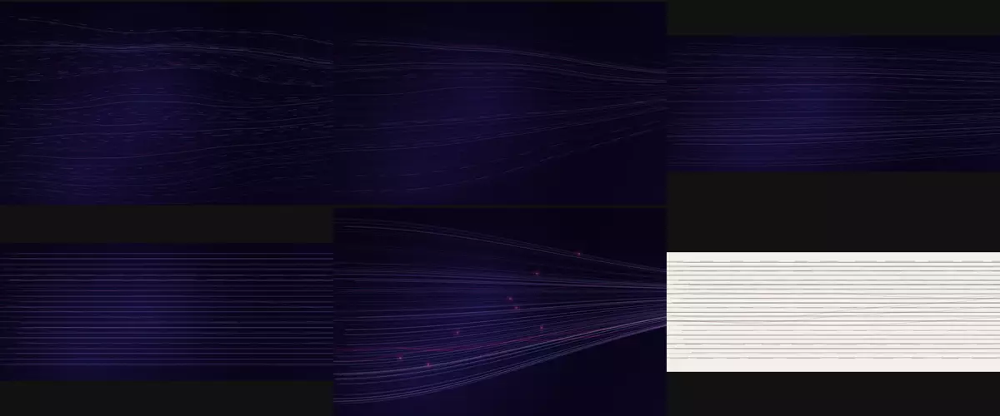
attached_assets/digerati_1761374558202.fig (75 MB Figma file) — the origin of the Frame and Rectangle exports.Class E — sourced / stock
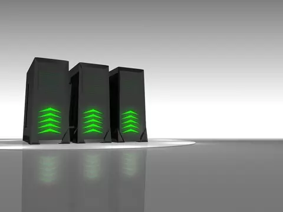
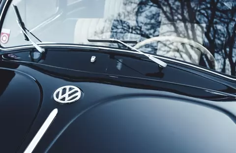
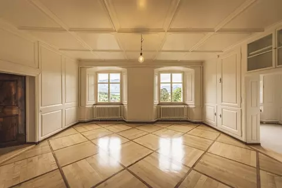
attached_assets/stock_images/; source and license are not recorded in the repository. The plan's rule for this class: only where reality beats creation, one voice per surface, provenance recorded.Reference material, counted, not shown
attached_assets/image_*.png) · 21 phone screenshots · ~90 pasted text specs and logs · two ZIP uploads · the Figma source. Working references, not assets; none are candidates for any page.Sourced facts in use (Class E evidence)
Verizon DBIR 2026 (48% / 62% / ~96%) · FBI IC3 2024 ($392M reported losses, Arizona) · Arizona A.R.S. §18-552 (45-day notification) · IBM Cost of a Data Breach ($11.5M US average) · Microsoft (MFA blocks 99%+ of automated attacks). Each carries source and year inline in Version B's evidence field and in cyberAwarenessFacts.ts; all are industry context, never DE performance.